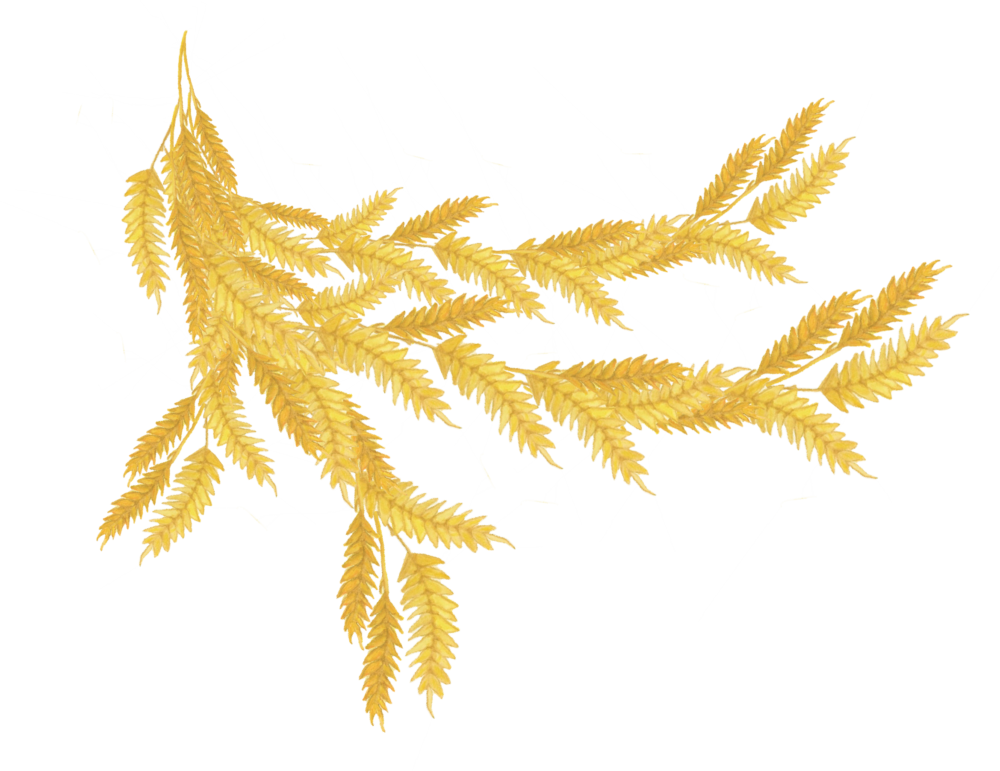
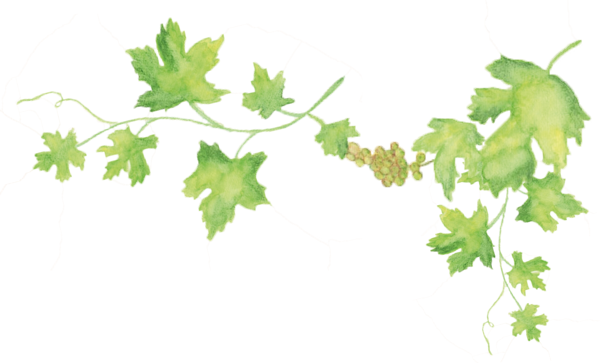
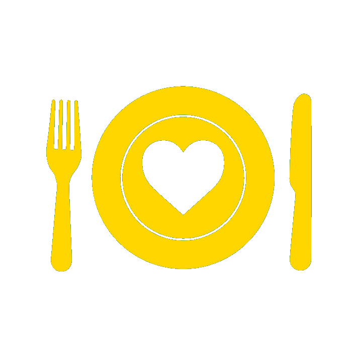
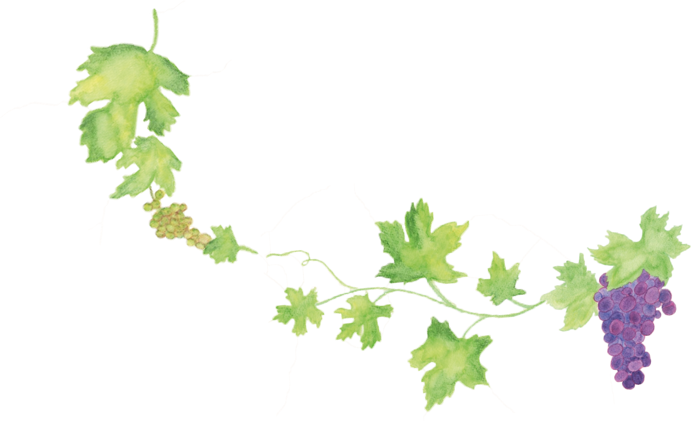
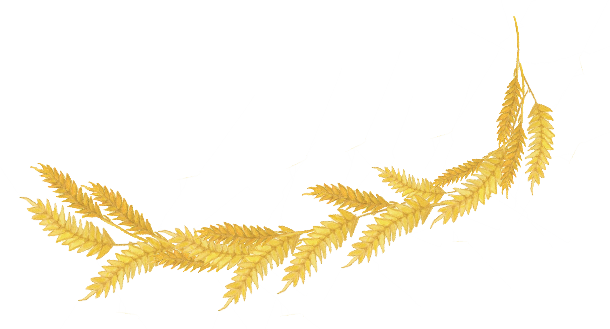

Elle ne s'est pas remise de la fermeture de Camaïeu
Julien
Son plat préféré : le bœuf bourguignon
La pâtisserie qu'il ne rate jamais : les macarons
L'endroit où il aimerait vivre : la campagne
Ses passe-temps : lecture et jeux-vidéos
Son style de musique : le rock
Il n'aime pas l'avion et adore faire du vélo

S'organiser
Pour vous aider à vous repérer, voici ci-contre les lieux où nous passerons la journée du 17 juin.
Pour ceux qui nous rejoindraient en train, il est possible de louer une voiture à Saint-Étienne à proximité de la gare.
La gare de Sury-le-Comtal est desservie par une dizaine de trains par jour, sauf le dimanche.
Pour se loger, plusieurs gîtes sont disponibles aux alentours de Luriecq, ainsi que des hôtels à Bonson.

Le programme
14h: Mairie
Rendez-vous à la mairie de Sury-le-Comtal.
15h: Église
Cérémonie en l'église Saint André de Sury-le-Comtal.
17h: Photos
Photos de groupe sur le parvis de l'église en sortant.
18h: Vin d'honneur
Servi en extérieur au Clos de la Crinoline à Luriecq.

20h: Repas
Repas suivi d'une soirée remplie de surprises.
La liste de mariage
Le plus beau cadeau sera votre présence parmi nous pour ce jour si important à nos yeux.
Toutefois, si vous le souhaitez, vous trouverez aussi disponible à cette adresse une liste de mariage pour nous aider à concrétiser nos projets.

Une petite surprise
Tous les 15 jours, une petite vidéo des mariés pour vous aider à vous mettre dans l'ambiance du mariage !

Partager des souvenirs
Vous avez pris des photos lors de la journée du mariage ? Vous voulez retrouver celles qui ont été prises par les autres invité et par le photographe du mariage ?
Nous vous invitons à les partager ici !
Nous contacter
Contacter Julien Par e-mail
Par téléphone
06 01 74 37 07
Notre fixe
09 86 65 17 72
Contacter Héloïse Par e-mail
Par téléphone
07 87 00 22 35